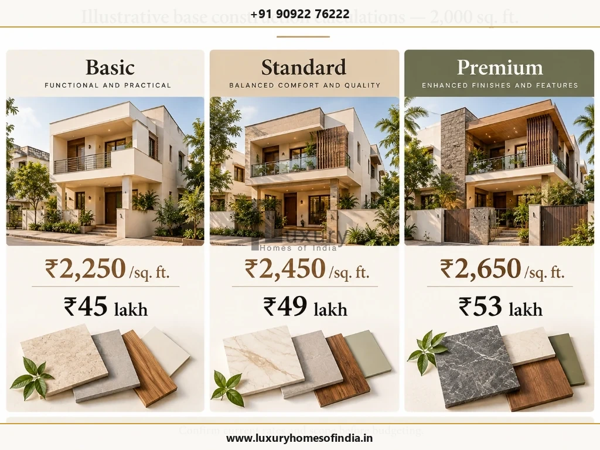
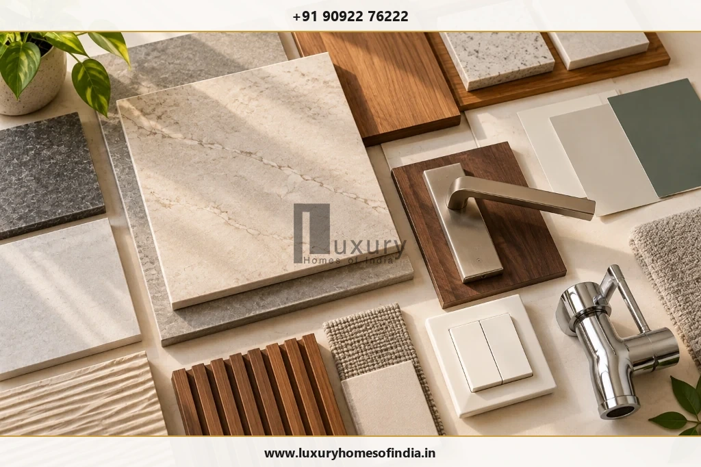
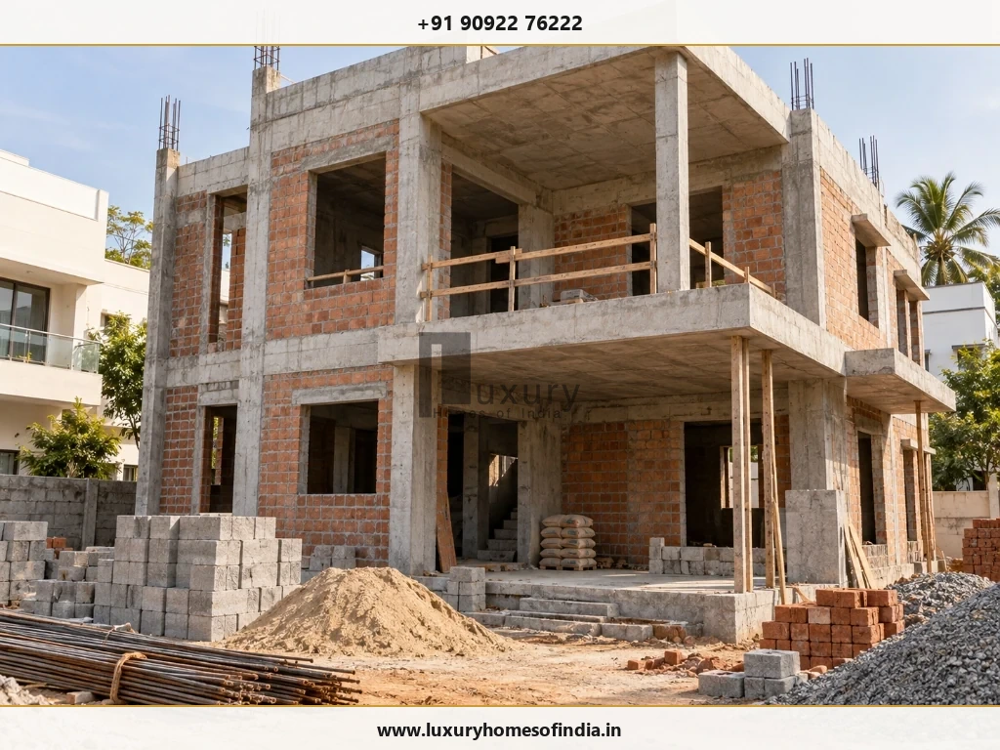
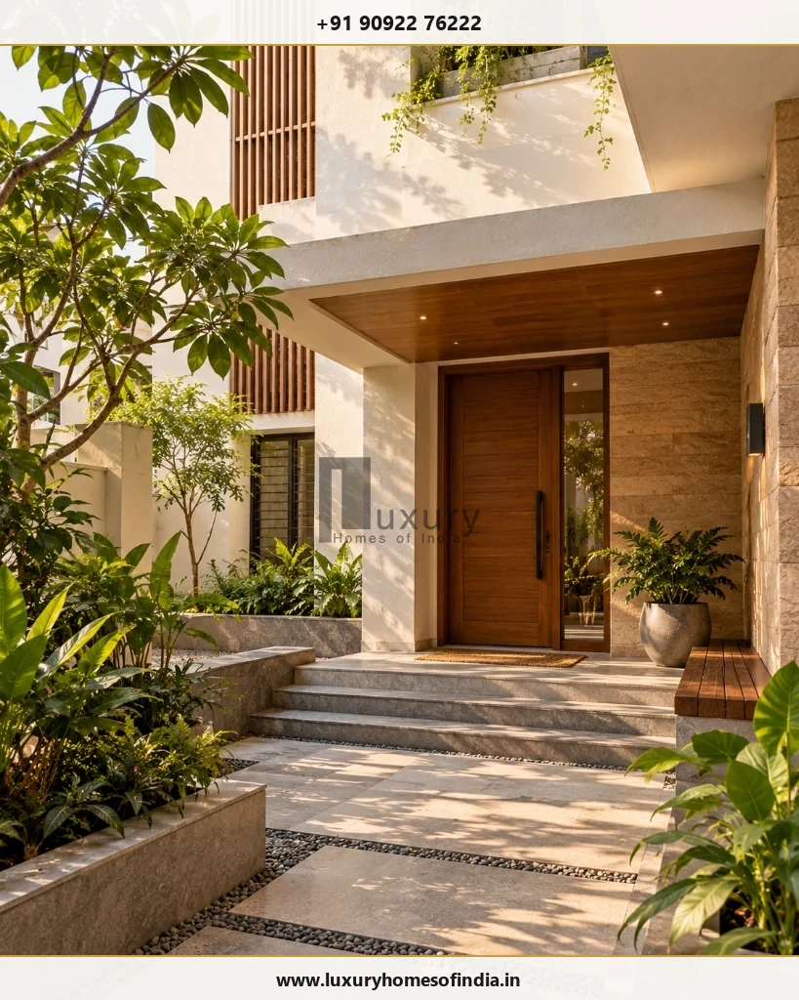

The cost to build a 2,000 sq. ft. house in Chennai depends on the built-up area, structural design, soil conditions, material specifications, finishing choices and the work included in the construction contract. Using the indicative rates supplied for this guide, the calculated base construction budget is ₹45 lakh for Basic, ₹49 lakh for Standard and ₹53 lakh for Premium specifications. These figures are preliminary planning calculations, not a binding quotation or a complete move-in budget. The final amount may also need to cover approvals, professional services, utility connections, compound walls, interiors and other site-specific work, depending on the agreement. Before committing to a contractor, confirm the area measurement, review the itemised scope, identify exclusions and keep a separate allowance for unforeseen work. This guide explains how to interpret the estimates, compare construction packages and prepare a more transparent budget for your proposed home in Chennai.
1. How much does it cost to build a 2,000 sq. ft. house in Chennai?
The preliminary base construction estimates for a 2,000 sq. ft. home are shown below. They are calculated using the indicative rates supplied for this article:

Functional layouts & practical baseline finishes
Balanced durability, comfort & premium branded fittings
Upgraded specifications & customized architectural detailing
| Indicative Construction Package | Rate per Sq. Ft. | Calculated Base Construction Cost |
|---|---|---|
| Basic | ₹2,250 | ₹45,00,000 (₹45.0 Lakh) |
| Standard (Recommended) | ₹2,450 | ₹49,00,000 (₹49.0 Lakh) |
| Premium | ₹2,650 | ₹53,00,000 (₹53.0 Lakh) |
Arithmetic Calculation Formula
Calculation: Assumed built-up area × applicable rate per sq. ft.
For example, calculating for the Standard package:
2,000 sq. ft. × ₹2,450 = ₹49,00,000 (₹49.0 Lakh).
The table illustrates the effect of the selected rate on the base budget. It does not establish the current market rate for every Chennai project, and the package labels do not guarantee a particular material specification.
Before using these amounts to plan your finances, confirm the following 6 critical points:
- Rate card currency: Whether the rate card is current and reflects prevailing steel, cement, and skilled labor rates.
- Measurement convention: How the built-up area is measured (e.g., plinth area vs. chargeable area including balconies and staircases).
- Floor distribution: Whether the quotation covers one floor (ground level) or multiple floors (G+1 duplex configuration).
- Material inclusions: Which materials, fittings and finishing items are included line by line.
- Scope boundaries: Whether design, municipal approvals, external civil works and statutory taxes are included or excluded.
- Variation pricing: How additional work, client-directed upgrades, and site variations are priced and approved.
A quotation with a higher rate may include services or materials that another quotation excludes. Compare the actual scope before comparing totals.
2. What do Basic, Standard and Premium construction packages mean?
The terms Basic, Standard and Premium are not universal technical specifications. Their meaning depends on the construction agreement, product allowances, design requirements and finish selections:

Basic construction (Indicative: ₹45 Lakh)
A budget-focused specification may prioritise functional layouts, practical materials and straightforward finishes. Depending on the contract, flooring, paint, doors, plumbing fittings and electrical accessories may be selected from economical product ranges.
The essential structural design, workmanship and applicable safety requirements should remain appropriate to the building. Budget control should not mean compromising structural safety or necessary waterproofing.
Standard construction (Indicative: ₹49 Lakh)
A standard specification may balance finish quality, durability and everyday comfort. Flooring, door hardware, electrical accessories, plumbing products and paint systems should be selected against a defined specification rather than an informal package description.
This approach can help a homeowner understand what the quoted amount covers and where upgrades would change the budget.
Premium construction (Indicative: ₹53 Lakh)
A premium specification may accommodate upgraded materials, more customised detailing and a broader selection of finishes, subject to the agreed scope.
Specialist cladding, bespoke joinery, imported products, decorative lighting and extensive interior fit-outs can require separate pricing.
How to Compare Packages Fairly
Ask for the same written schedule of materials and work for every package. Confirm brands or acceptable equivalents, product grades, dimensions, allowances and exclusions before signing the agreement.
3. What is included in a house construction quotation?
The scope of a residential construction quotation varies by contractor and project. Use this comprehensive checklist to establish what has actually been priced:

| Work Category | Items to Verify |
|---|---|
| Site preparation | Site marking, setting out, excavation, levelling, backfilling, and soil disposal requirements. |
| Foundation | Design basis, footing type (isolated/raft/pile), foundation depth, anti-termite treatment, and soil-related provisions. |
| Structural work | RCC footings, plinth beams, columns, lintels, beams, roof slabs, and steel reinforcement grades (e.g. Fe 500D/550D). |
| Masonry | Internal and external walls, specified brick type (wire-cut chamber bricks vs. AAC blocks), and mortar ratios. |
| Plastering | Internal smooth plastering, external weather-proof cement plastering, and ceiling finish requirements. |
| Waterproofing | Locations covered (toilets, sunken slabs, terrace, balconies, underground sump), system specified, and membrane details. |
| Plumbing | Concealed CPVC/UPVC water supply pipework, SWR drainage lines, fixtures, valves, and septic tank/sewer connection scope. |
| Electrical | Fire-retardant wiring, concealed PVC conduits, point count per room, distribution boards, MCBs, and modular switch plates. |
| Flooring | Product selection (vitrified tiles, granite, marble), supply allowance limit per sq. ft., mortar laying, and skirting. |
| Doors and windows | Teakwood main door frame and shutter, flush doors for bedrooms, UPVC or aluminium window frames with clear glass and hardware. |
| Painting | Surface preparation, wall putty coats, primer, and internal emulsion/external weather-shield paint system. |
| Final finishing | Defined finishing items, deep cleaning, snagging defect rectifications, and formal handover requirements. |
This checklist is a guide to reviewing a quotation, not a statement that every item is included in the indicative LHI rates. Request an itemised scope and clarify owner-supplied items, provisional allowances, taxes, exclusions and the process for approving variations.
4. What additional costs should you budget for?
A base construction rate does not necessarily represent the complete cost of preparing a house for occupation. Depending on the property and contract, additional expenses may include:
- Architecture and engineering: Design development, architectural working drawings, structural engineering drawings, and MEP service schematics when separately charged.
- Approvals and statutory charges: CMDA or GCC planning permissions, building permit scrutiny fees, documentation, and infrastructure development charges.
- Site investigation: Geotechnical soil bore tests, topographical contour surveys, and site level assessments where required.
- Special foundation work: Additional excavation depth, dewatering, pile foundations, or soil replacement arising from site ground conditions.
- Compound wall and gate: Boundary wall construction affected by plot running length, foundation depth, masonry, plaster, and MS/teak main gate.
- Water storage and supply: Underground RCC water sump, overhead Sintex/RCC tank, borewell drilling, casing pipe, and pressure pump systems.
- Utility connections: TANGEDCO/TNEB 3-phase electricity connection deposits, meter board setup, CMWSSB water/sewerage connections, and road-cut fees.
- Interiors: Modular kitchen cabinetry, bedroom wardrobes, crockery units, false ceilings, furniture, curtains, and decorative lighting.
- External development: Driveway paver blocks, perimeter stormwater drainage channels, rainwater harvesting pits, and landscape gardens.
- Special upgrades: Smart-home automation, CCTV surveillance, solar rooftop panels, pressure booster pumps, and water softeners.
- Applicable taxes and contractual charges: GST on construction works contract services, labour welfare cess, and contractor insurance coverage.
Not every project will require every item, and some may already be covered by the construction contract. Avoid adding assumed amounts without project-specific information. The most useful next step is to list each potential expense as included, excluded, provisionally allowed or not applicable.
5. How much contingency should you keep?
A contingency is a separate planning allowance for unforeseen work and changes. For an initial budgeting exercise, you could model a provisional allowance of 5–10% of the base construction estimate. This is an illustrative planning assumption, not a prediction of the actual additional cost of your project:
| Package | Base Estimate | Illustrative Contingency (5%–10%) | Base Plus Contingency |
|---|---|---|---|
| Basic | ₹45 Lakh | ₹2.25 – ₹4.50 Lakh | ₹47.25 – ₹49.50 Lakh |
| Standard | ₹49 Lakh | ₹2.45 – ₹4.90 Lakh | ₹51.45 – ₹53.90 Lakh |
| Premium | ₹53 Lakh | ₹2.65 – ₹5.30 Lakh | ₹55.65 – ₹58.30 Lakh |
These subtotals include only the illustrative contingency. They do not automatically cover approvals, interiors, utility connections, external development or other excluded work.
Your contingency should be reviewed against the maturity of the drawings, site investigation, contract scope and uncertainty in the estimate. A well-developed design and clearly documented contract can help identify cost exposure earlier, but neither eliminates all unforeseen expenses.
6. What factors affect house construction costs in Chennai?
When building a 2,000 sq. ft. home in Chennai, expenditure is driven by multiple site, architectural, and procurement variables:

- Site access and logistics: Road access width, material unloading permissions, storage space on site, and municipal restrictions on heavy truck movement influence material handling and crane costs.
- Soil and groundwater conditions: The foundation system should be determined through appropriate site investigation and structural design. High groundwater levels or soft marine clay along Chennai's coastal belts require deep pile footings or dewatering pumps that increase civil expenses.
- Built-up area and number of floors: A 2,000 sq. ft. single-storey home is not equivalent in scope to a 2,000 sq. ft. multi-storey home (G+1 duplex). Multi-storey designs require staircases, additional intermediate slabs, and exterior scaffolding, but reduce ground footprint and foundation area.
- Structural and architectural design: Large column-free spans, deep cantilevers, double-height living areas, complex roof pergolas, and customized facade fins affect structural steel tonnage and shuttering requirements.
- Material and finish choices: Choices in flooring (vitrified tile vs. Italian marble), door frames (treated country wood vs. Burma teak), window joinery (standard UPVC vs. thermally broken aluminium), and plumbing fixtures dictate final budgets.
- Contract scope: A quotation that covers the main building alone is not directly comparable with one that includes additional external works, interior fit-outs or professional services.
- Changes during construction: Late layout changes, material upgrades and additions to the original scope may affect costs and programme requirements. Record proposed variations, their prices and their implications before approving the work.
7. How to plan a 2,000 sq. ft. house construction budget
Use the interactive calculator below to model your base construction estimate and contingency reserve for any planned built-up area:
Use the following 9-step sequence to organise the project before committing to construction:
- Confirm the built-up area: Use the current drawings and agree on the measurement basis in writing.
- Complete design development: Resolve major layout and structural decisions with qualified architects and structural engineers.
- Assess the site: Review soil test bore logs, road levels, access constraints, drainage and other project-specific requirements.
- Define the specification: Document the main structural materials, finishes, sanitary fixtures and brand allowances.
- Obtain itemised quotations: Ask contractors to price against the identical bill of quantities (BOQ) and scope.
- Separate additional expenses: Identify approvals, professional fees, external works, interiors and utility connections as applicable.
- Agree on payment milestones: Define the physical progress evidence associated with each milestone disbursement.
- Document variations: Record approved changes, cost implications, and schedule adjustments before executing additional work.
- Review the budget regularly: Compare committed expenditure, approved changes and remaining allowances against the master budget.
A budget should evolve with the project information. The initial calculation is a starting point; it should be refined as the design, site assessment and contractual scope become clearer.
8. How should you compare construction quotations?
The lowest headline rate is not necessarily the lowest total cost for the same finished building. Differences in specifications and exclusions can make direct comparisons misleading.
Compare quotations against a common schedule covering:
- Cement, steel and masonry specifications.
- Structural scope and engineering design responsibilities.
- Waterproofing locations, treatment layers, and warranty systems.
- Flooring materials, supply allowance limits per square foot, and laying charges.
- Door and window specifications, frame timber, and hardware.
- Plumbing products, pressure lines, and sanitaryware brand allowances.
- Electrical point counts, wire gauge, modular accessories, and MCB boards.
- Painting systems, surface putty preparation, and finishing coats.
- Elevation treatments, architectural louvers, and specialist exterior finishes.
- Site supervision quality, engineer presence, and progress reporting.
- Taxes, exclusions, payment terms and change-order procedures.
Ask each contractor to state assumptions explicitly. If a quotation uses a provisional amount for a material or work item, clarify what happens if the actual selection costs more or less. A like-for-like comparison makes it easier to understand the financial trade-offs without treating the lowest initial number as the only decision criterion.
9. Planning your house with Luxury Homes of India
If you are planning a home in Chennai, the useful starting point is a discussion about your plot, intended built-up area, number of floors, design requirements and preferred material specifications.
Luxury Homes of India provides residential construction-related services described on its website, including civil construction and associated design and execution offerings. The precise services, deliverables, current package availability and project-specific pricing should be confirmed directly before a commitment.
For a proposed 2,000 sq. ft. house, prepare the following information for an initial consultation:
- Plot location, orientation, and approximate boundary dimensions.
- Intended built-up area and number of floors (e.g. Ground or G+1).
- Current architectural drawings or conceptual floor plans, if available.
- Preferred construction and finishing scope (Basic, Standard, or Premium).
- Desired inclusions such as turnkey interiors, compound walls, or solar setup.
- Target completion timeline and primary budget constraints.
Plan your construction budget with clarity
The indicative calculations in this guide show a base construction range of ₹45 lakh to ₹53 lakh for a 2,000 sq. ft. home using the supplied rates. Your final budget should be based on the current quotation, approved design, site conditions, written specifications and clearly defined exclusions. Before selecting a construction partner, compare equivalent scopes of work, identify additional expenses and keep an appropriate allowance for uncertainty.
Frequently Asked Questions
Detailed answers to critical financial, structural, and contractual questions regarding 2,000 sq. ft. residential construction in Chennai:
Cost disclaimer: The amounts in this guide are indicative calculations based on the rates supplied for the article. They are not a binding quotation or a guarantee of current pricing. Confirm the rate card and all inclusions and exclusions directly. Actual project costs may vary with design, site conditions, materials, applicable charges and the agreed scope.